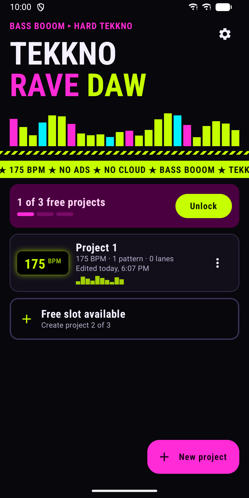
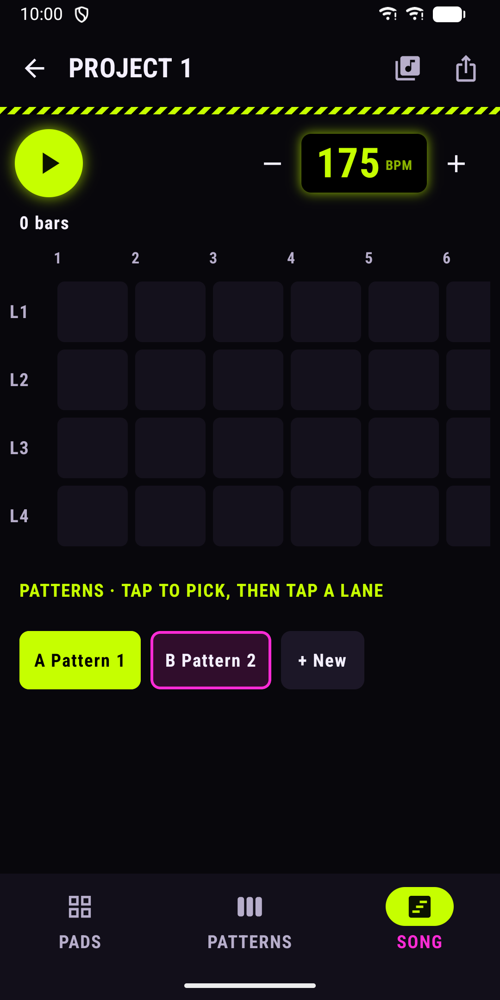

Tekkno Rave DAW: Beat-Maker
Hardtechno-Groovebox mit Pads, Tonhöhenraster und Song-Ansicht für Hardcore.






Über die App
Tekkno Rave DAW ist eine kleine Groovebox für Hardtechno, Gabber und Hardcore. Skizziere einen Track auf deinem Handy: Pads spielen, Noten auf ein Tonhöhenraster malen und Patterns zu einem Song arrangieren. PADS - 16 Pads. Die ersten 12 sind mit einem fertigen Kit belegt: Kicks, Hats, Claps, Snare, Acid-Stab, Hoover, Sirene und Sub-Bass. - Nimm ein Sample mit dem Mikrofon direkt auf ein Pad auf. - Importiere eigene Audiodateien über die Dateiauswahl des Systems. - Live aufnehmen: Spiele die Pads über einen Loop mit 16 Schritten. Deine Treffer rasten im Raster ein (1/16 oder 1/8). Pausiere, nimm erneut auf, um Ebenen zu ergänzen, und speichere den Take als neues Pattern. PATTERN-RASTER - Die Schritte laufen von links nach rechts, die Tonhöhe von unten nach oben. Eine höhere Zeile ist ein höherer Ton. - 8, 16, 32 oder 64 Schritte, Oktavverschiebung und optionales Einrasten auf eine Tonleiter. - Male mit jedem Sample, so können Kicks, Stabs und Leads in einem Pattern liegen. - Rückgängig und Wiederholen. Jede Änderung wird automatisch gespeichert. SONG - 4 Spuren. Wähle ein Pattern und tippe auf einen Takt, um es zu platzieren. Clips in einer Spur überlappen nie. - Verschiebe Clips per Ziehen oder über das Clip-Menü. - Tempo von 140 bis 220 BPM. 50 SAMPLES ENTHALTEN Kicks, Hats, Rides, Claps, Snares, Sub- und Acid-Bass, Hoover- und Rave-Stabs, Sirenen, Risers und Impacts. Die mitgelieferten Samples stehen unter CC0. Die Lizenzen findest du in den Einstellungen. KAUF - Die App startet mit 3 Projekten. - Ein einzelner In-App-Kauf (Einmalzahlung, kein Abo) schaltet unbegrenzt viele Projekte und den WAV-Export (44,1 kHz, 16 Bit) frei. - Alles andere funktioniert ohne Kauf. - Den Kauf kannst du mit demselben Google-Konto wiederherstellen. HOMESCREEN-WIDGET Zeigt deine letzten Projekte mit BPM. Tippe auf eines, um dessen Pads zu öffnen. Ein Schalter in den Einstellungen blendet Projektnamen auf dem Homescreen aus. DATENSCHUTZ - Die App funktioniert ohne Konto und ohne Internetverbindung. Sie deklariert keine Internetberechtigung. - Keine Analyse, kein Tracking, keine Werbung. - Projekte und Aufnahmen bleiben auf deinem Gerät und sind nicht Teil von Cloud-Backups. - Das Mikrofon wird nur genutzt, während du ein Sample aufnimmst. Die App funktioniert auch ohne. - WAV-Exporte werden dort gespeichert, wo du es festlegst. - In den Einstellungen gibt es die Schaltfläche „Alle Daten löschen“. BARRIEREFREIHEIT - Folgt dem hellen oder dunklen Design deines Systems. - Screenreader-Beschriftungen für Pads, Rasterzellen und Clips, mit Tipp-Alternativen für Ziehgesten. - Große Touchflächen, Layouts für Handy und Tablet. - Beachtet die Systemeinstellung zum Entfernen von Animationen. Visuelle Impulse bleiben unter 3 pro Sekunde.